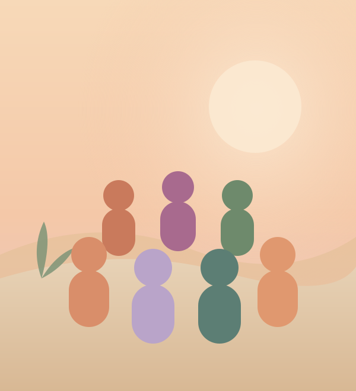
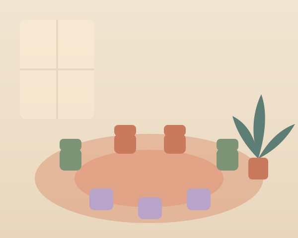

A seminar for 16–25 year olds, built around four foundations: self-belief, perspective, connection, and purpose.
Free to attend. No pressure, no selling, no fixing you — you arrive exactly as you are.

Being young right now is a lot. The comparison, the pressure to have it figured out, the feeling everyone else got a manual you didn't. None of that means something is wrong with you.
"I feel like I'm performing a version of myself all the time."
You'll get to put the performance down and find who's underneath.
"I have no idea what I actually want from my life."
We help you hear your own voice again — under everyone else's noise.
"I find it hard to open up, even to people I love."
You'll practise honesty in a room that makes it feel safe to.

Not therapy. Not a lecture. Not a motivational rally that wears off by Monday. The Extra Ordinary Life is a carefully held experience built on psychology — where you do the gentle, honest inner work most people never get the chance to.
Each stage makes the next one possible. Climbed in order, they build something that actually holds.
Learn to stop abandoning yourself when life gets hard. Build self-trust through small promises kept, challenge the inner critic, and recognise that many of the beliefs you hold about yourself were installed by repetition, pain, or proximity — not consciously chosen.
How you view yourself shapes every decision you make. Explore the difference between familiar thoughts and true thoughts, learn to question the "always," "never," and "nobody" stories your mind tells, and build a fair, honest inner coach instead of an inner enemy.
A good life is built through relationships. Practise vulnerability, learn how to communicate honestly, discover how to find "your people" through shared values rather than performance, and understand why the people who showed up matter more than the people who impressed you.
Extraordinary lives are often built through ordinary moments approached with attention and meaning. Clarify your values, identify what you stand for, and create a life that feels meaningful even when nobody is watching.
The staircase works in order. Self-belief creates perspective. Perspective creates connection. Connection creates meaning. Meaning creates a life you don't need to escape from.
The goal isn't to become someone else. It's to stop abandoning yourself.— The first principle we teach
Here's the gentle shape of the sessions together. Nothing is sprung on you — you always know what's next.
First session · Arriving
A warm welcome and the first gentle conversations. We set the tone: no judgement, total confidentiality, and the freedom to be a beginner at all of this.
Early sessions · Understanding
Through guided exercises and small-group conversation, you'll start to see your own patterns clearly — where your confidence leaks away, where your walls went up, and why.
Middle sessions · Opening
This is where it gets real — gently. You'll practise saying true things out loud and being met with warmth instead of judgement. Many describe this as the moment something unlocks.
Final sessions · Becoming
We turn insight into something you can live. You'll leave with practical tools, a clearer sense of direction, and a small group of people who've got you long after the sessions end.
An extraordinary life is often built through ordinary moments approached with attention and meaning.
The ordinary days, the people who stayed, and the small promises kept to yourself — that's the actual material of a good life.
Opening up takes trust. Here's exactly how we earn it — for you, and for the people who care about you.
Every facilitator is trained in psychology and group safety, DBS-checked, and supervised. No exceptions.
You're never forced to share or perform. "Pass" is always a complete sentence here.
What's said in the room stays in the room. No recording, no posting, no sharing without consent.
We're a personal-growth experience, not therapy. If you need more support, we'll help you find it.
Real changes people noticed in how they think, one that lasts longer than a conversation.
"I thought confidence meant never feeling nervous."
"I realised confidence is doing things even when you're nervous."
"I was constantly comparing myself to everyone online."
"I started paying attention to my actual life instead of everyone else's highlight reel."
"I kept waiting to feel ready before putting myself out there."
"I learned that courage comes before confidence, not after."
"I felt like everyone else had life figured out except me."
"I realised most people are figuring it out as they go."
Every session, all materials and the follow-up supported at cost — for every young person, with no catch and no upsell at the end.
We've answered the questions people ask most — what actually happens, whether it's really free, and what to do if your parents are nervous.
Read the FAQYou don't have to have it figured out. You just have to be a little curious, and willing to show up. We'll hold the rest.